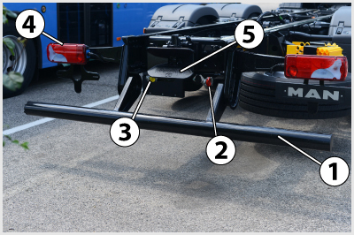

- 14. Kötelező-e a légfékes vontatmányt a kapcsolószerkezeten felül biztonsági lánccal is a vontatóhoz kapcsolni? #704524
- Nem, mert leszakadás esetén az elszakadó töltővezetéknek kell befékeznie a pótkocsit.
- Nem kötelező, de célszerű.
- Igen, minden esetben.
- Félpótkocsik esetén nem, a többi pótkocsi fajta estén igen.

- 15. A képen látható vonószerkezet... #704569
- 3,5 tonnát meghaladó össztömegű forgózsámolyos és központi tengelyes pótkocsik vontatására szolgál.
- 3,5 tonnát meghaladó össztömegű félpótkocsik vontatására szolgál.
- Fék nélküli pótkocsik vontatására szolgál.
- 3,5 tonnát meghaladó össztömegű központi tengelyes és félpótkocsik vontatására szolgál.
- 16. A képen látható csapos vonószerkezet... #704570
- összekapcsolása a vonószemmel automatikusan, szétkapcsolása pedig a 3-as jelű kar segítségével történik.
- összekapcsolása a vonószemmel a 3-as jelű kar segítségével, szétkapcsolása pedig automatikusan történik.
- összekapcsolása a vonószemmel és szétkapcsolása is automatikusan történik.
- összekapcsolása a vonószemmel és szétkapcsolása is a 3-as jelű kar segítségével történik.
- 17. A képen látható csapos vonószerkezet a véletlen szétkapcsolódás ellen... #704572
- kettős reteszeléssel rendelkezik.
- egyszeres reteszeléssel rendelkezik.
- háromszoros reteszeléssel rendelkezik.
- nem rendelkezik külön reteszeléssel.

- 18. A képen látható 5-ös jelű vonószerkezet... #704584
- egy csapos automatikus vonófej.
- egy vonóháromszög.
- egy vonószem.
- egy vonóhorog.
- 19. A képen látható 5-ös jelű csapos automatikus vonófej... #704585
- forgózsámolyos (vonóháromszöges) és központi tengelyes pótkocsik vontatására alkalmazható.
- forgózsámolyos (vonóháromszöges) és félpótkocsik vontatására alkalmazható.
- központi tengelyes és félpótkocsik vontatására alkalmazható.
- félpótkocsik vontatására alkalmazható.

- 20. Milyen pótkocsi részlete látható a képen? #704673
- Forgózsámolyos pótkocsi átmenő légfékkel.
- Vonórudas pótkocsi átmenő légfékkel.
- Vonórudas pótkocsi ráfutófékkel.
- Félpótkocsi átmenő légfékkel.
- 21. A képen látható 6-os számú alkatrész a vonóháromszög... #704674
- magasságának beálltására és szükség szerinti rögzítésére szolgáló rúd.
- lengéscsillapítója, mely kioltja a haladás közben keletkező veszélyes lengéseket.
- gázrugója, amely szétkapcsoláskor nem engedi a vonóháromszöget a talajra zuhanni..
- stabilizátora, amely megakadályozza a vonóháromszög elcsavarodását.
- 22. A vontatót és a pótkocsit összekapcsoló vonószerkezetnek... #704818
- alakzárónak kell lennie.
- erőzárónak kell lennie.
- alak- és erőzárónak kell lennie.
- 23. A pótkocsi vonószerkezete... #704819
- menet közben történő szétkapcsolódás és a pótkocsi lekapcsolt helyzetében sem érhet le a talajra.
- a pótkocsi lekapcsolt helyzetében nem érhet le a talajra.
- a pótkocsi lekapcsolt helyzetében és menet közben történő szétkapcsolódás esetén is leérhet a talajra.
- menet közben, felkapcsolt helyzetben nem érhet le a talajra.
- 24. A 3,5 tonnánál nagyobb össztömegű pótkocsiknak a gépjárműhöz kapcsolására... #704823
- csak önműködően záró kapcsolószerkezetet szabad használni.
- csak hidraulikus kapcsolószerkezetet szabad használni.
- csak horgos kapcsolószerkezetet szabad használni.
- 25. Milyen elfordulást kell a közúti nyergesvontató nyeregszerkezetének lehetővé tenni a vontató és a félpótkocsi között? #704824
- A függőleges és a keresztirányú tengely körüli elfordulást.
- A függőleges és a hosszirányú tengely körüli elfordulást.
- Hossz- és a keresztirányú tengely körüli elfordulást.
- 26. Állítható-e a pótkocsira szerelt vonóháromszög vonószemének magassági helyzete lekapcsolt állapotban? #704825
- Igen, a vonóháromszögre szerelt csavarrugó előfeszítésével.
- Nem, mert a helyzete mindig ugyanaz.
- Igen, összekapcsoláskor a segítő személynek kell a megfelelő helyzetbe emelnie.
- 27. Milyen módon kapcsolódik össze a félpótkocsi és vontatója? #704826
- A félpótkocsi a vontató nyeregszerkezetére támaszkodik, királycsapja pedig a nyereg zárszerkezetével kapcsolódik össze.
- A pótkocsi vonófeje a vontatóra szerelt vonógömbbel kapcsolódik össze.
- A pótkocsi vonószeme a vontató csapos vonószerkezetével kapcsolódik össze.
- 28. Milyen állítási lehetőségeket valósíthatnak meg a nyergesvontatók nyeregszerkezetein? #704828
- Hosszirányú, illetve magasságállítást.
- Keresztirányú, illetve magasságállítást.
- Hossz- és keresztirányú állítást.
- 29. Hányszoros alakzáró reteszelést kell alkalmazni a nyeregszerkezet zárt állapotának rögzítéséhez? #714713
- Legalább kétszereset.
- Legalább egyszereset.
- 30. A vontató és a félpótkocsi összekapcsolását lehetővé tevő királycsap a járműszerelvény melyik tagján található? #714714
- A félpótkocsin.
- A vontatón
- 31. Mikor vontatható az előírások szerint ráfutó fékkel felszerelt pótkocsi? #724253
- Akkor vontatható, ha a pótkocsi össztömege nem haladja meg a vonó jármű össztömegének a háromnegyedét.
- Akkor vontatható, ha a pótkocsi össztömege nem haladja meg a vonó jármű össztömegét.
- Akkor vontatható, ha a pótkocsi saját tömege nem haladja meg a vonó jármű össztömegének a felét.
- Akkor vontatható, ha a pótkocsi össztömege nem haladja meg a vonó jármű 68 kilogrammal növelt saját tömegének a felét.